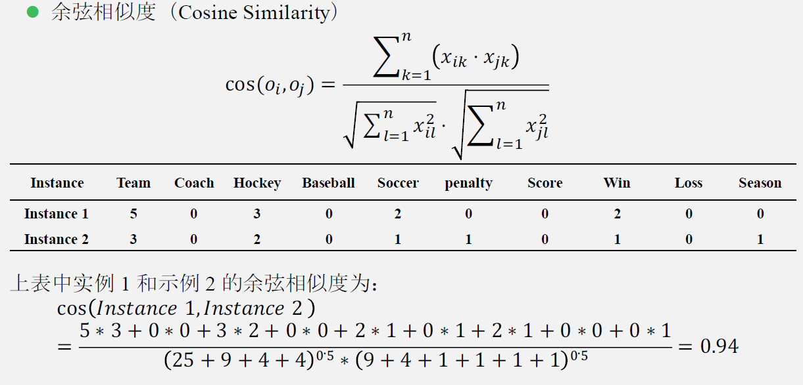
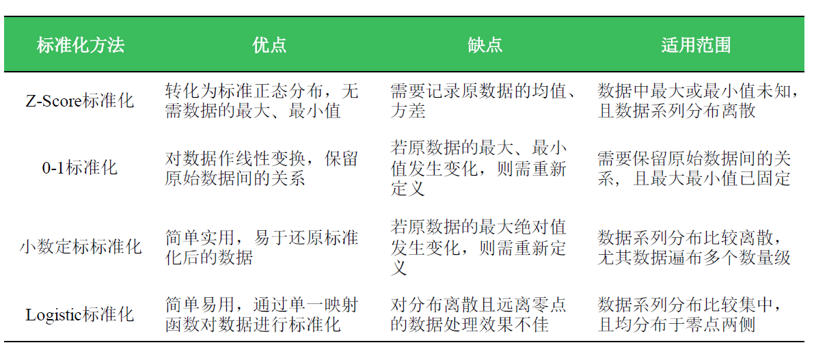

数据类型
表格数据
行为对象（元组、数据点、实例、样本均为相同概念），列为属性
属性
维、特征、变量、属性均为相同概念
数据类型
- 名义型
- 布尔型
- 等级型
- 数值型
数据的基本统计信息
统计中心趋势和离散程度：
- 均值：算数均值、加权均值
- 中位数（median）
- 众数（mode）
- 对于适度倾斜的单峰曲线，有经验公式：mean - mode = 3 * (mean - median)
- 分位数（Quantile）：x为数据集中的数，如果数据集中百分之K的数都不大于x，则称x为数据集的K分位数
- 上四分位数（Q3-75% quentile）
- 下四分位数（Q1-25% quentile）
- 中间分位数（IQR）: IQR = Q3 - Q1, 也叫四分位距，用来衡量数据的分散情况。
- 方差（Variance）和标准差（Standard deviation）

- 盒图（箱线图）
距离度量
相似性，值域通常为[0,1]
名义型数据类型 & 布尔型数据类型
- 简单匹配（相同属性个数m，属性数量p，则距离为p-m/p）
- 转换为多个布尔属性，如下图所示

q是两者都有的一个属性，r是i有但是j没有的属性。
数值型数据类型
明可夫斯基距离：
余弦相似度：

前者是绝对距离，后者是方向差异。
前者体现维度数值大小的差异，后者体现类似于用户兴趣之类的差异。
等级型数值类型
混合型数据类型
将上述的类型求得的距离进行加权求和。
数据预处理的方式
- 数据清洗
- 数据集成
- 数据转换
- 数据归约

数据标准化
算法要求或者数据量纲不同：
- Z-score标准化：接近（0，1）分布，适用于最值未知
- 0-1标准化：线性变换到[0,1]区间
- 小数定标标准化：
- logistic标准化
当数据集中的分布在零点附近时，通过sigmoid函数可以将其均匀地散开。
方法比较

数据离散化
有些数据挖掘算法，特别是某些分类算法（如朴素贝叶斯），要求数据是分类属性形式（类别型属性）这样常常需要将连续属性变换成分类属性（离散化，Discretization）。另外，如果一个分类属性（或特征）具有大量不同值，或者某些之出现不频繁，则对于某些数据挖掘任务，通过合并某些值减少类别的数目可能是有益的。(具体可参考“离散化与稠密化”)
本质：将连续型数据分段
无监督离散化
- 等距离散化
- 等频离散化
- 基于聚类分析的离散化（先聚类，再合并（自底向上）或分裂（自顶向下），达到预定的簇个数）
- 基于正态3σ的离散化
- 有监督离散化
- 基于信息增益的离散化（自顶向下）
- 基于卡方的离散化（自底向上，根据不同区间的类分布相似度进行聚合，相似度越高，卡方值越小）
小结
缺失值处理
缺失机制
- 完全随机缺失
- 随机缺失（与完全变量有关）
- 完全非随机缺失（与不完全变量自身有关）
处理方法
删除法
- 删除样本
- 删除变量（缺得多，对研究目标影响不大）
- 降低权重（不影响数据结构）
基于填补的方法
- 单一填补（均值、k-means、热平台、冷平台）
- 随机填补（在均值填补的基础上加随机项）
- 基于模型的方法
- 建模预测
异常值检测
基于统计的方法
上下α分位数之外的值
基于距离的算法
局部异常因子算法（LOF算法）